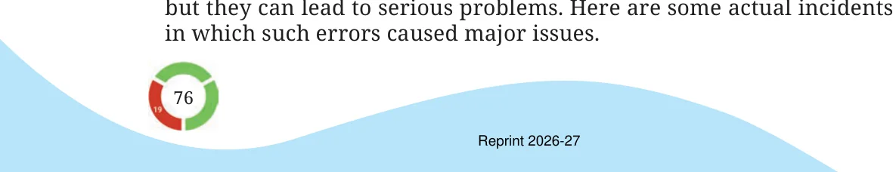

Decimal and Measurement Disasters
Decimal point and unit conversion mistakes may seem minor sometimes

- In 2013, the finance office of Amsterdam City Council (Netherlands) mistakenly sent out €188 million in housing benefits instead of the intended €1.8 million due to a programming error that processed payments in euro cents instead of euros. (1 euro-cent \(= 1/100\) euro).
- In 1983, a decimal error nearly caused a disaster for an Air Canada Boeing 767. The ground staff miscalculated the fuel, loading 22,300 pounds instead of kilograms - about half of what was needed (1 pound ~ 0.453 kg). The plane ran out of fuel mid-air, forcing the pilots to make an emergency landing at an abandoned airfield. Fortunately, everyone survived. Several incidents have occurred due to incorrect reading of decimal numbers while giving medication. For example, reading 0.05 mg as 0.5 mg can lead to using a medicine 10 times more than the prescribed quantity. It is therefore important to pay attention to units and the location of the decimal point.